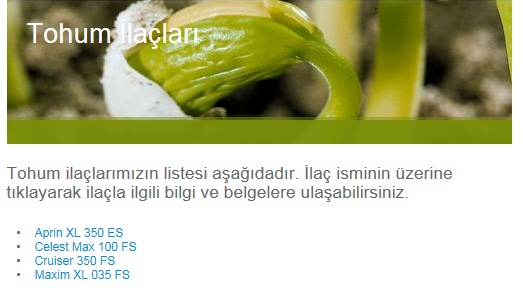
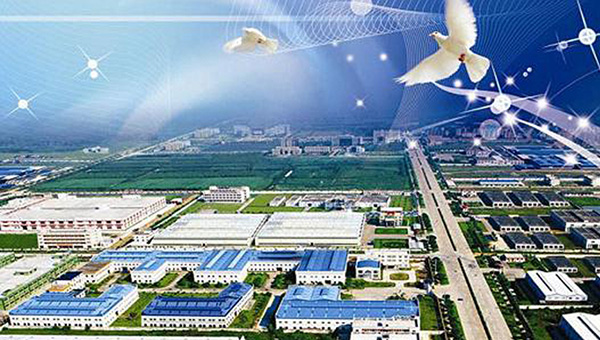

Tarým Ürünleri
Buðday: Trakya’da Ergene Bölümü’nde yoðun olarak yetiþtirilir. Bölge, üretimde Ýç Anadolu’dan sonar 2. sýrada yer alýr.
Ayçiçeði: Tohumlarýndan yað elde etmek için yetiþtirilir. Türkiye üretiminin % 80 ini bu bölge karþýlar. Ergene ve Güney Marmara Bölümleri’nde ekimi yoðunlaþýr.
Þekerpancarý: Trakya, Güney Marmara ve Adapazarý ovalarýnda ekim yapýlýr.
Tütün: Bölge, Türkiye üretiminde 3. sýrayý alýr. Bursa, Balýkesir, Adapazarý’nda ekimi yoðunlaþýr.
Mýsýr: Bölge, üretimde Karadeniz’den sonra 2. sýrayý alýr. Adapazarý ve Bursa önemli ekim alanlarýdýr.
sanayi
Marmara bölgesinde hangi sanayi kollarý geliþmiþtir
Ekonomik yönden en geliþmiþ bölgemizdir. Sanayi kesiminde çalýþan iþçilerin yarýya yakýný, sanayi ürünlerinin üçte birinden fazlasý bu bölgeden elde edilir. Sanayinin en çok geliþtiði bölgedir.
Türkiye'de üretilen enerjinin 1/3'ü Marmara Bölgesi'nde tüketilir. Ülkemizin en büyük sanayi kuþaðý bu bölgede Ýstanbul - Adapazarý arasýnda bulunmaktadýr. Bu hat üzerinde çok çeþitli iþ kollarý yer alýr. Türkiye'nin en geliþmiþ ve iþlek limaný, Ýstanbul limanýdýr. Bölge Türkiye ekonomisine ticaret, ulaþým, turizm ve sanayi faaliyetlerinden elde ettiði gelirlerle büyük katký saðlar. En fazla vergi veren bölgemizdir.
Ýzmit Ýpraþ :rafinerisi,beyaz eþya fabrikasý , otomotiv , kaðýt , boru, petrokimya,ilaç,alüminyum ,makine, cam,gübre
Adapazarý :Tarým aletleri, vagon, þeker
Gölcük : Tersane
Hereke : Yünlü dokuma , halý
Ýstanbul : gýda,yünlü ve ipekli dokuma,hazýr giyim, lastik, petrol ürünleri, madeni eþya, elektrikli makineler
Bursa : Meyve suyu, otomotiv,****l eþya , gýda,yünlü ve ipekli dokuma, konserve
Balýkesir : Kimya,kaðýt,dokuma,gýda,yem
Gemlik : Zeytinyaðý, suni ipek,suni gübre
Tekirdað : Raký ve þarap fabrikasý
Çanakkale : Gýda ve seramik
Edirne : Ayçiçek yaðý fabrikasý

